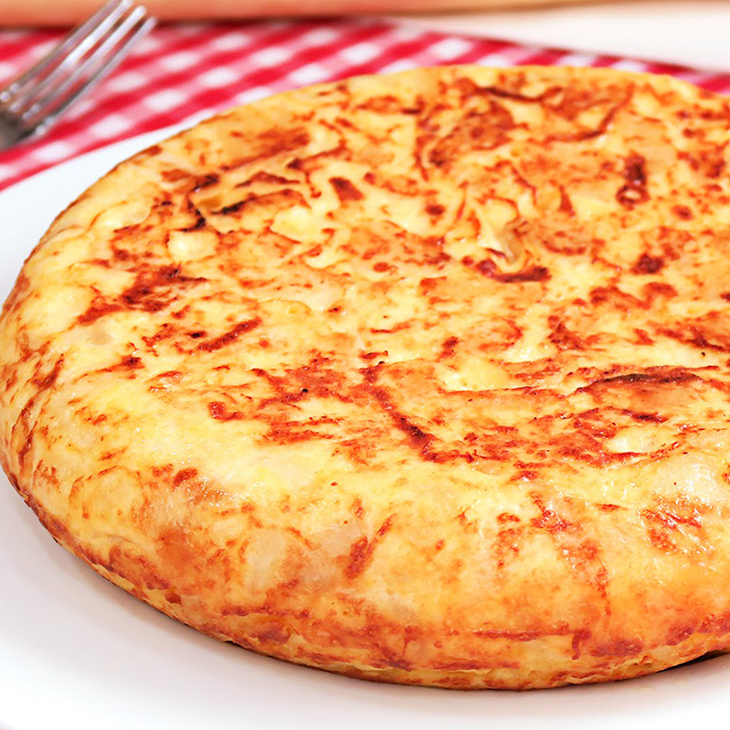

SPANISH OMELETTE

Spanish Omelette, also known as Tortilla Española, is a traditional dish from Spain, primarily consisting of potatoes and eggs.
The basic version only includes these two ingredients, but it can also be made with additional ingredients like onions, garlic, and various herbs and spices.
The process involves thinly slicing the potatoes (and onions if using), frying them in olive oil, and then mixing them with beaten eggs.
The mixture is then cooked slowly on a low heat. Unlike most omelettes, the Spanish Omelette is often served cold and can be enjoyed as a tapa, or a light meal.
The Spanish Omelette is a versatile dish that can be enjoyed at any time of day, and it's a beloved staple in Spanish cuisine.
Ingredients
- Potatoes - 4 medium-sized
- Eggs - 6 large
- Onion (optional) - 1 medium-sized, finely chopped
- Olive Oil - 1 cup
- Salt - to taste
Steps
- Peel and thinly slice the potatoes and onion if using.
- Heat olive oil in a large frying pan over medium heat. Add the potatoes and onion, and cook until they are soft but not browned, stirring occasionally.
- Meanwhile, beat the eggs in a large bowl and season with salt.
- Once the potatoes and onion are cooked, drain them from the oil and mix them with the beaten eggs.
- Heat a little of the reserved oil in the same pan over low heat. Pour in the potato and egg mixture, spreading it out evenly.
- Cook for about 10-15 minutes until the bottom is golden and the top is mostly set.
- Carefully flip the omelette and cook for another 5-10 minutes on the other side.
- Remove from heat, let it cool for a few minutes, slice into wedges, and enjoy!